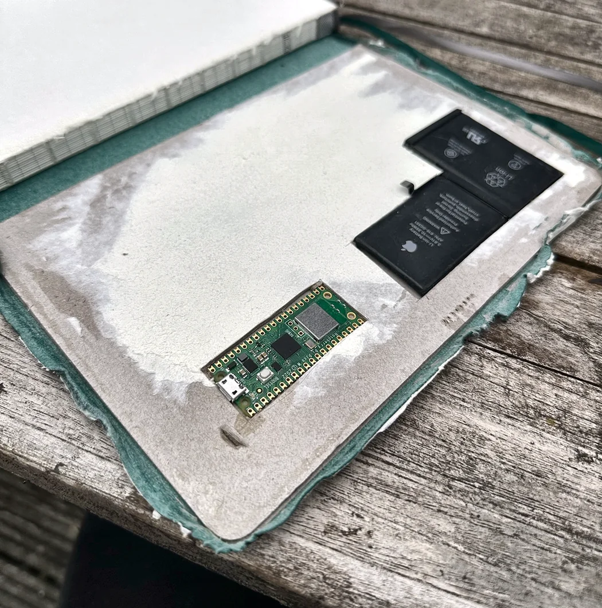
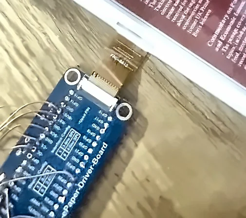
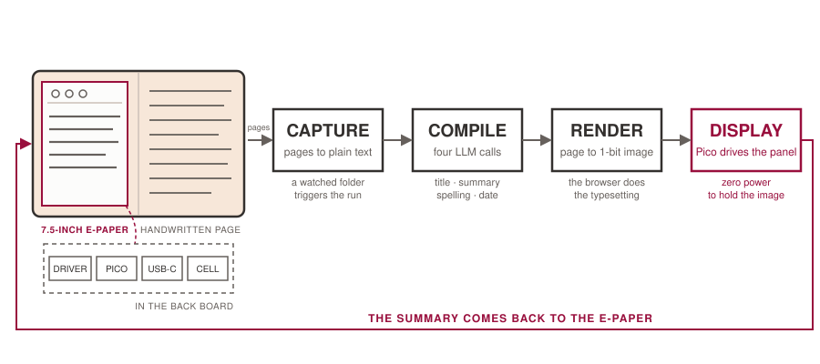
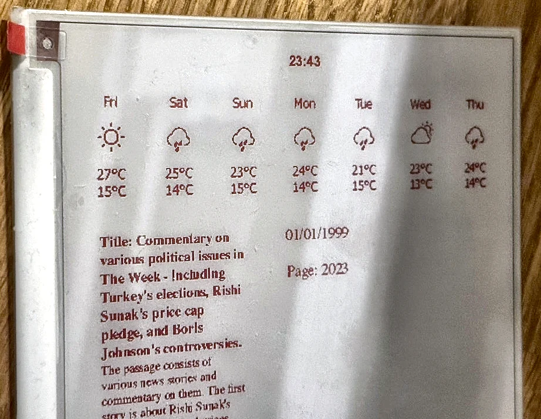

Embedded systems · Self-directed
An e-paper display that summarises a paper notebook
I write on paper and rarely look back at it, so I cut a recess into the back cover of a notebook, fitted an e-paper display, and set it up to show summaries of the recent pages.
 Cell
Pico
USB-C charger
Driver board
Ribbon to panel
Cell
Pico
USB-C charger
Driver board
Ribbon to panel
Why I built it
This one is a personal build. I think better on paper and keep a notebook properly, but a fortnight later the contents may as well not exist, because nothing on a paper page is searchable. Digital notes fix that, but they lose the reason I write on paper in the first place.
The idea was to keep writing on paper and have the notebook do the recall itself: an e-paper display in the cover, showing what the recent pages were about and what the week looks like, updating without the notebook ever being opened.


How it works
The chain is longer than it looks, because none of the parts talk to each other natively.

- Pages get captured and turned into plain text, dropped into a watched folder.
- A file watcher notices the new file and triggers the compiler.
- Four separate language-model calls run over the text: correct the spelling, produce a short title, summarise in under forty words, and pull out a date. Splitting them up rather than asking for all four at once made each one far more reliable.
- The results append to a JSON store, which a small local web page renders alongside a weather forecast.
- That page gets screenshotted headlessly at exactly the panel's resolution, then reduced to a one-bit-per-channel image.
- The Pico pulls the image and drives the panel. E-paper holds its state with no power, so the display only costs anything at the moment it changes.
Rendering to a web page and screenshotting it is the decision I would keep. Laying out mixed text and icons directly on a microcontroller is painful, and HTML and CSS already do it well. Letting the browser do the typesetting and treating the Pico as a dumb display removed most of that work.
Getting the image onto the microcontroller
The awkward constraint is memory. A full-panel image is larger than the Pico comfortably wants to hold, so a chunk of this project is a set of compression experiments written in C, trying to find a format that is small enough to move and cheap enough to decode on a device with almost no memory to spare. That directory taught me more than anything else in the repository.

Where it falls over
The photograph above shows the failure modes rather than a staged best case. The date reads 01/01/1999, which is the sentinel the code returns when the extraction step can't find a date and gives up. The page number next to it is wrong. And the title is not the short one the prompt asked for, it is most of a paragraph.
All three are the same class of problem: a language model asked for structured output in a fixed format, complying most of the time but not always, with a regex behind it doing the actual parsing. The fallbacks work, so the display renders something sensible instead of crashing, but what is on the panel in that photograph is the fallbacks firing. If I rebuilt it now I'd use constrained decoding for the fields that have to be machine-readable and stop trying to parse prose.
← All projects